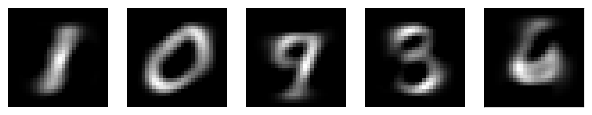

Outlier Detection¶
import numpy as np
import matplotlib.pyplot as plt
% matplotlib inline
plt.rcParams["figure.dpi"] = 300
np.set_printoptions(precision=3, suppress=True)
import pandas as pd
from sklearn.model_selection import train_test_split, cross_val_score
from sklearn.pipeline import make_pipeline
from sklearn.preprocessing import scale, StandardScaler
from matplotlib.offsetbox import OffsetImage, AnnotationBbox
from sklearn.datasets import fetch_mldata
mnist = fetch_mldata("MNIST original")
/home/andy/checkout/scikit-learn/sklearn/utils/deprecation.py:76: DeprecationWarning: Function fetch_mldata is deprecated; fetch_mldata was deprecated in version 0.20 and will be removed in version 0.22. Please use fetch_openml. warnings.warn(msg, category=DeprecationWarning) /home/andy/checkout/scikit-learn/sklearn/utils/deprecation.py:76: DeprecationWarning: Function mldata_filename is deprecated; mldata_filename was deprecated in version 0.20 and will be removed in version 0.22. Please use fetch_openml. warnings.warn(msg, category=DeprecationWarning)
---------------------------------------------------------------------------
ConnectionResetError Traceback (most recent call last)
<ipython-input-3-8a029c5f792a> in <module>()
1 from sklearn.datasets import fetch_mldata
----> 2 mnist = fetch_mldata("MNIST original")
~/checkout/scikit-learn/sklearn/utils/deprecation.py in wrapped(*args, **kwargs)
75 def wrapped(*args, **kwargs):
76 warnings.warn(msg, category=DeprecationWarning)
---> 77 return fun(*args, **kwargs)
78
79 wrapped.__doc__ = self._update_doc(wrapped.__doc__)
~/checkout/scikit-learn/sklearn/datasets/mldata.py in fetch_mldata(dataname, target_name, data_name, transpose_data, data_home)
124 urlname = MLDATA_BASE_URL % quote(dataname)
125 try:
--> 126 mldata_url = urlopen(urlname)
127 except HTTPError as e:
128 if e.code == 404:
~/anaconda3/envs/py37/lib/python3.7/urllib/request.py in urlopen(url, data, timeout, cafile, capath, cadefault, context)
220 else:
221 opener = _opener
--> 222 return opener.open(url, data, timeout)
223
224 def install_opener(opener):
~/anaconda3/envs/py37/lib/python3.7/urllib/request.py in open(self, fullurl, data, timeout)
523 req = meth(req)
524
--> 525 response = self._open(req, data)
526
527 # post-process response
~/anaconda3/envs/py37/lib/python3.7/urllib/request.py in _open(self, req, data)
541 protocol = req.type
542 result = self._call_chain(self.handle_open, protocol, protocol +
--> 543 '_open', req)
544 if result:
545 return result
~/anaconda3/envs/py37/lib/python3.7/urllib/request.py in _call_chain(self, chain, kind, meth_name, *args)
501 for handler in handlers:
502 func = getattr(handler, meth_name)
--> 503 result = func(*args)
504 if result is not None:
505 return result
~/anaconda3/envs/py37/lib/python3.7/urllib/request.py in http_open(self, req)
1343
1344 def http_open(self, req):
-> 1345 return self.do_open(http.client.HTTPConnection, req)
1346
1347 http_request = AbstractHTTPHandler.do_request_
~/anaconda3/envs/py37/lib/python3.7/urllib/request.py in do_open(self, http_class, req, **http_conn_args)
1318 except OSError as err: # timeout error
1319 raise URLError(err)
-> 1320 r = h.getresponse()
1321 except:
1322 h.close()
~/anaconda3/envs/py37/lib/python3.7/http/client.py in getresponse(self)
1319 try:
1320 try:
-> 1321 response.begin()
1322 except ConnectionError:
1323 self.close()
~/anaconda3/envs/py37/lib/python3.7/http/client.py in begin(self)
294 # read until we get a non-100 response
295 while True:
--> 296 version, status, reason = self._read_status()
297 if status != CONTINUE:
298 break
~/anaconda3/envs/py37/lib/python3.7/http/client.py in _read_status(self)
255
256 def _read_status(self):
--> 257 line = str(self.fp.readline(_MAXLINE + 1), "iso-8859-1")
258 if len(line) > _MAXLINE:
259 raise LineTooLong("status line")
~/anaconda3/envs/py37/lib/python3.7/socket.py in readinto(self, b)
587 while True:
588 try:
--> 589 return self._sock.recv_into(b)
590 except timeout:
591 self._timeout_occurred = True
ConnectionResetError: [Errno 104] Connection reset by peer
X = mnist.data / 255.
from sklearn.decomposition import NMF, PCA
pca = PCA(n_components=4)
pca.fit(X)
PCA(copy=True, iterated_power='auto', n_components=4, random_state=None,
svd_solver='auto', tol=0.0, whiten=False)
def plot_decomposition(image, components, coef, cmap='viridis'):
image_shape = image.shape
plt.figure(figsize=(20, 3))
ax = plt.gca()
imagebox = OffsetImage(image, zoom=5, cmap="gray")
ab = AnnotationBbox(imagebox, (.05, 0.4), pad=0.0, xycoords='data')
ax.add_artist(ab)
sorting = np.argsort(np.abs(coef))[::-1]
for i in range(4):
imagebox = OffsetImage(components[sorting[i]].reshape(image_shape), zoom=5., cmap=cmap)
ab = AnnotationBbox(imagebox, (.3 + .2 * i, 0.4),
pad=0.0,
xycoords='data'
)
ax.add_artist(ab)
if i == 0:
plt.text(.18, .3, r'{:.2f}'.format(coef[sorting[i]]), fontdict={'fontsize': 30})
else:
plt.text(.165 + .202 * i, .3, r'+ {:.2f}'.format(coef[sorting[i]]), fontdict={'fontsize': 30})
plt.text(.96, .25, '+ ...', fontdict={'fontsize': 30})
plt.rc('text', usetex=True)
plt.text(.13, .3, r'\approx', fontdict={'fontsize': 30})
plt.axis("off")
plot_decomposition(mnist.data[0].reshape(28, 28), pca.components_, pca.transform(mnist.data[:1] / 255.)[0])
plot_decomposition(mnist.data[11000].reshape(28, 28), pca.components_, pca.transform(mnist.data[11000:11001] / 255.)[0])


nmf = NMF(n_components=20)
nmf.fit(X)
NMF(alpha=0.0, beta_loss='frobenius', init=None, l1_ratio=0.0, max_iter=200,
n_components=20, random_state=None, shuffle=False, solver='cd',
tol=0.0001, verbose=0)
plot_decomposition(mnist.data[0].reshape(28, 28), nmf.components_, nmf.transform(mnist.data[:1] / 255.)[0], cmap="gray")
plot_decomposition(mnist.data[11000].reshape(28, 28), nmf.components_, nmf.transform(mnist.data[11000:11001] / 255.)[0], cmap="gray")


nmf20 = NMF(n_components=20)
nmf20.fit(X)
NMF(alpha=0.0, beta_loss='frobenius', init=None, l1_ratio=0.0, max_iter=200,
n_components=20, random_state=None, shuffle=False, solver='cd',
tol=0.0001, verbose=0)
nmf5 = NMF(n_components=5)
nmf5.fit(X)
NMF(alpha=0.0, beta_loss='frobenius', init=None, l1_ratio=0.0, max_iter=200,
n_components=5, random_state=None, shuffle=False, solver='cd',
tol=0.0001, verbose=0)
fig, axes = plt.subplots(4, 5, figsize=(10, 5))
for ax, comp in zip(axes.ravel(), nmf20.components_):
ax.imshow(comp.reshape(28, 28), cmap="gray")
ax.set_xticks(())
ax.set_yticks(())

fig, axes = plt.subplots(1, 5, figsize=(10, 5))
for ax, comp in zip(axes.ravel(), nmf5.components_):
ax.imshow(comp.reshape(28, 28), cmap="gray")
ax.set_xticks(())
ax.set_yticks(())

Outlier Detection¶
from sklearn.datasets import make_blobs
fig, ax = plt.subplots(1, 2, figsize=(6, 3))
X, y = make_blobs(random_state=1)
X_train, X_test, y_train, y_test = train_test_split(X, y, train_size=.9, random_state=0)
rng = np.random.RandomState(5)
X_train_noise = np.vstack([X_train, rng.uniform(X_train.min(), X_train.max(), size=(3, 2))])
y_train_noise = np.hstack([np.zeros_like(y_train), [1, 1, 1]])
ax[0].scatter(X_train_noise[:, 0], X_train_noise[:, 1], c=plt.cm.Vega10(y_train_noise))
X_test_noise = np.vstack([X_test, rng.uniform(X_test.min(), X_test.max(), size=(4, 2))])
y_test_noise = np.hstack([np.zeros_like(y_test), [1, 0, 1, 1, 1]])
ax[1].scatter(X_test_noise[:, 0], X_test_noise[:, 1], c=plt.cm.Vega10(y_test_noise))
plt.suptitle("Outlier Detection")
<matplotlib.text.Text at 0x7fc8daef46d8>
from sklearn.datasets import make_blobs
fig, ax = plt.subplots(1, 2, figsize=(6, 3))
X, y = make_blobs(random_state=1)
X_train, X_test, y_train, y_test = train_test_split(X, y, train_size=.9, random_state=0)
rng = np.random.RandomState(5)
X_train_noise = np.vstack([X_train, rng.uniform(X_train.min(), X_train.max(), size=(3, 2))])
y_train_noise = np.hstack([np.zeros_like(y_train), [1, 1, 1]])
ax[0].scatter(X_train[:, 0], X_train[:, 1])
X_test_noise = np.vstack([X_test, rng.uniform(X_test.min(), X_test.max(), size=(4, 2))])
y_test_noise = np.hstack([np.zeros_like(y_test), [1, 0, 1, 1, 1]])
ax[1].scatter(X_test_noise[:, 0], X_test_noise[:, 1], c=plt.cm.Vega10(y_test_noise))
plt.suptitle("Novelty Detection")
<matplotlib.text.Text at 0x7fc8dad73cc0>

import numpy as np
import matplotlib.pyplot as plt
from sklearn.covariance import EmpiricalCovariance, MinCovDet
n_samples = 125
n_outliers = 25
n_features = 2
# generate data
gen_cov = np.eye(n_features)
gen_cov[0, 0] = 2.
X = np.dot(np.random.randn(n_samples, n_features), gen_cov)
# add some outliers
outliers_cov = np.eye(n_features)
outliers_cov[np.arange(1, n_features), np.arange(1, n_features)] = 7.
X[-n_outliers:] = np.dot(np.random.randn(n_outliers, n_features), outliers_cov)
# fit a Minimum Covariance Determinant (MCD) robust estimator to data
robust_cov = MinCovDet().fit(X)
# compare estimators learnt from the full data set with true parameters
emp_cov = EmpiricalCovariance().fit(X)
# Show data set
subfig1 = plt.gca()
inlier_plot = subfig1.scatter(X[:, 0], X[:, 1],
color='black', label='inliers')
outlier_plot = subfig1.scatter(X[:, 0][-n_outliers:], X[:, 1][-n_outliers:],
color='red', label='outliers')
subfig1.set_xlim(subfig1.get_xlim()[0], 11.)
subfig1.set_title("Mahalanobis distances of a contaminated data set:")
# Show contours of the distance functions
xx, yy = np.meshgrid(np.linspace(plt.xlim()[0], plt.xlim()[1], 100),
np.linspace(plt.ylim()[0], plt.ylim()[1], 100))
zz = np.c_[xx.ravel(), yy.ravel()]
mahal_emp_cov = emp_cov.mahalanobis(zz)
mahal_emp_cov = mahal_emp_cov.reshape(xx.shape)
emp_cov_contour = subfig1.contour(xx, yy, np.sqrt(mahal_emp_cov),
cmap=plt.cm.PuBu_r,
linestyles='dashed')
mahal_robust_cov = robust_cov.mahalanobis(zz)
mahal_robust_cov = mahal_robust_cov.reshape(xx.shape)
robust_contour = subfig1.contour(xx, yy, np.sqrt(mahal_robust_cov),
cmap=plt.cm.YlOrBr_r, linestyles='dotted')
subfig1.legend([emp_cov_contour.collections[1], robust_contour.collections[1],
inlier_plot, outlier_plot],
['MLE dist', 'robust dist', 'inliers', 'outliers'],
loc="upper right", borderaxespad=0)
plt.xticks(())
plt.yticks(())
([], <a list of 0 Text yticklabel objects>)
from sklearn.covariance import EllipticEnvelope
ee = EllipticEnvelope(contamination=.1).fit(X)
pred = ee.predict(X)
print(pred)
print(np.mean(pred == -1))
[ 1 1 1 1 1 1 1 1 1 1 1 1 1 1 1 1 1 1 1 1 1 1 1 1 1
1 1 1 1 1 1 1 1 1 1 1 1 1 1 1 1 1 1 1 1 1 1 1 1 1
1 1 1 1 1 1 1 1 1 1 1 1 1 1 1 1 1 1 1 1 1 1 1 1 1
1 1 1 1 1 1 1 1 1 1 1 1 1 1 1 1 1 1 1 1 1 1 1 1 1
-1 1 1 1 -1 -1 1 -1 1 1 -1 1 -1 -1 -1 1 1 -1 -1 -1 -1 1 -1 1 1]
0.104
from sklearn.covariance import EllipticEnvelope
ee = EllipticEnvelope(contamination=.1).fit(X_train_noise)
pred = ee.predict(X_train_noise)
plt.scatter(X_train_noise[:, 0], X_train_noise[:, 1], c=plt.cm.Vega10(pred))
<matplotlib.collections.PathCollection at 0x7fc8da8fe198>
from sklearn.neighbors import KernelDensity
kde = KernelDensity().fit(X_noise[:, :1])
line = np.linspace(X_noise.min(), 3, 100)
line_density = kde.score_samples(line[:, np.newaxis])
plt.plot(line, line_density)
plt.plot(X_noise[:, 0], -5 * np.ones(X_noise.shape[0]), 'o')
plt.ylim(-6, -2)
(-6, -2)

kde = KernelDensity(bandwidth=.3).fit(X_noise[:, :1])
line = np.linspace(X_noise.min(), 3, 100)
line_density = kde.score_samples(line[:, np.newaxis])
plt.plot(line, line_density)
plt.plot(X_noise[:, 0], -5 * np.ones(X_noise.shape[0]), 'o')
plt.ylim(-7, 1)
(-7, 1)

kde = KernelDensity(bandwidth=3)
kde.fit(X_train_noise)
pred = kde.score_samples(X_train_noise)
pred = (pred > np.percentile(pred, 10)).astype(int)
xs = np.linspace(xlim[0], xlim[1], 100)
ys = np.linspace(ylim[0], ylim[1], 100)
xx, yy = np.meshgrid(xs, ys)
dec = kde.score_samples(np.c_[xx.ravel(), yy.ravel()])
plt.xlim(xlim)
plt.ylim(ylim)
plt.contourf(xx, yy, dec.reshape(xx.shape), alpha=.5)
pred = kde.score_samples(X_train_noise)
pred = (pred > np.percentile(pred, 10)).astype(int)
plt.scatter(X_train_noise[:, 0], X_train_noise[:, 1], c=plt.cm.Vega10(pred))
<matplotlib.collections.PathCollection at 0x7fc8d8ed5a90>
from sklearn.svm import OneClassSVM
scaler = StandardScaler()
X_train_noise_scaled = scaler.fit_transform(X_train_noise)
oneclass = OneClassSVM(nu=.1).fit(X_train_noise_scaled)
pred = oneclass.predict(X_train_noise_scaled).astype(np.int)
dec = oneclass.decision_function(scaler.transform(np.c_[xx.ravel(), yy.ravel()]))
plt.xlim(xlim)
plt.ylim(ylim)
plt.contourf(xx, yy, dec.reshape(xx.shape), alpha=.5)
plt.scatter(X_train_noise[:, 0], X_train_noise[:, 1], c=plt.cm.Vega10(pred))
<matplotlib.collections.PathCollection at 0x7fc8d89f5e48>

from sklearn.ensemble import IsolationForest
iso = IsolationForest().fit(X_train_noise)
pred = iso.predict(X_train_noise)
plt.scatter(X_train_noise[:, 0], X_train_noise[:, 1], c=plt.cm.Vega10(pred))
xlim = plt.xlim()
ylim = plt.ylim()

xs = np.linspace(xlim[0], xlim[1], 100)
ys = np.linspace(ylim[0], ylim[1], 100)
xx, yy = np.meshgrid(xs, ys)
dec = iso.decision_function(np.c_[xx.ravel(), yy.ravel()])
plt.xlim(xlim)
plt.ylim(ylim)
plt.contourf(xx, yy, dec.reshape(xx.shape), alpha=.5)
plt.scatter(X_train_noise[:, 0], X_train_noise[:, 1], c=plt.cm.Vega10(pred))
<matplotlib.collections.PathCollection at 0x7fc8d9456128>

data = pd.read_csv("creditcard.csv")
data.shape
(284807, 31)
data.head()
| Time | V1 | V2 | V3 | V4 | V5 | V6 | V7 | V8 | V9 | ... | V21 | V22 | V23 | V24 | V25 | V26 | V27 | V28 | Amount | Class | |
|---|---|---|---|---|---|---|---|---|---|---|---|---|---|---|---|---|---|---|---|---|---|
| 0 | 0.0 | -1.359807 | -0.072781 | 2.536347 | 1.378155 | -0.338321 | 0.462388 | 0.239599 | 0.098698 | 0.363787 | ... | -0.018307 | 0.277838 | -0.110474 | 0.066928 | 0.128539 | -0.189115 | 0.133558 | -0.021053 | 149.62 | 0 |
| 1 | 0.0 | 1.191857 | 0.266151 | 0.166480 | 0.448154 | 0.060018 | -0.082361 | -0.078803 | 0.085102 | -0.255425 | ... | -0.225775 | -0.638672 | 0.101288 | -0.339846 | 0.167170 | 0.125895 | -0.008983 | 0.014724 | 2.69 | 0 |
| 2 | 1.0 | -1.358354 | -1.340163 | 1.773209 | 0.379780 | -0.503198 | 1.800499 | 0.791461 | 0.247676 | -1.514654 | ... | 0.247998 | 0.771679 | 0.909412 | -0.689281 | -0.327642 | -0.139097 | -0.055353 | -0.059752 | 378.66 | 0 |
| 3 | 1.0 | -0.966272 | -0.185226 | 1.792993 | -0.863291 | -0.010309 | 1.247203 | 0.237609 | 0.377436 | -1.387024 | ... | -0.108300 | 0.005274 | -0.190321 | -1.175575 | 0.647376 | -0.221929 | 0.062723 | 0.061458 | 123.50 | 0 |
| 4 | 2.0 | -1.158233 | 0.877737 | 1.548718 | 0.403034 | -0.407193 | 0.095921 | 0.592941 | -0.270533 | 0.817739 | ... | -0.009431 | 0.798278 | -0.137458 | 0.141267 | -0.206010 | 0.502292 | 0.219422 | 0.215153 | 69.99 | 0 |
5 rows × 31 columns
X_train, X_test, y_train, y_test = train_test_split(data.drop("Class", axis=1), data.Class, train_size=.1, random_state=0)
X_train.shape
(28480, 30)
scaler = StandardScaler()
X_train_scaled = scaler.fit_transform(X_train)
ee = EllipticEnvelope().fit(X_train_scaled)
# => error
---------------------------------------------------------------------------
ValueError Traceback (most recent call last)
<ipython-input-240-efde2cb2e7b3> in <module>()
----> 1 ee = EllipticEnvelope().fit(X_train_scaled)
2 # => error
/home/andy/checkout/scikit-learn/sklearn/covariance/outlier_detection.py in fit(self, X, y)
173
174 def fit(self, X, y=None):
--> 175 MinCovDet.fit(self, X)
176 self.threshold_ = sp.stats.scoreatpercentile(
177 self.dist_, 100. * (1. - self.contamination))
/home/andy/checkout/scikit-learn/sklearn/covariance/robust_covariance.py in fit(self, X, y)
617 X, support_fraction=self.support_fraction,
618 cov_computation_method=self._nonrobust_covariance,
--> 619 random_state=random_state)
620 if self.assume_centered:
621 raw_location = np.zeros(n_features)
/home/andy/checkout/scikit-learn/sklearn/covariance/robust_covariance.py in fast_mcd(X, support_fraction, cov_computation_method, random_state)
433 select=n_best_sub, n_iter=2,
434 cov_computation_method=cov_computation_method,
--> 435 random_state=random_state)
436 subset_slice = np.arange(i * n_best_sub, (i + 1) * n_best_sub)
437 all_best_locations[subset_slice] = best_locations_sub
/home/andy/checkout/scikit-learn/sklearn/covariance/robust_covariance.py in select_candidates(X, n_support, n_trials, select, n_iter, verbose, cov_computation_method, random_state)
272 X, n_support, remaining_iterations=n_iter, verbose=verbose,
273 cov_computation_method=cov_computation_method,
--> 274 random_state=random_state))
275 else:
276 # perform computations from every given initial estimates
/home/andy/checkout/scikit-learn/sklearn/covariance/robust_covariance.py in _c_step(X, n_support, random_state, remaining_iterations, initial_estimates, verbose, cov_computation_method)
144 if np.isinf(det):
145 raise ValueError(
--> 146 "Singular covariance matrix. "
147 "Please check that the covariance matrix corresponding "
148 "to the dataset is full rank and that MinCovDet is used with "
ValueError: Singular covariance matrix. Please check that the covariance matrix corresponding to the dataset is full rank and that MinCovDet is used with Gaussian-distributed data (or at least data drawn from a unimodal, symmetric distribution.
from sklearn.decomposition import PCA
X_train_pca = PCA(n_components=.8).fit_transform(X_train_scaled)
ee = EllipticEnvelope().fit(X_train_pca)
from sklearn.metrics import roc_auc_score
roc_auc_score(y_train, ee.mahalanobis(X_train_pca))
0.91699652177871382